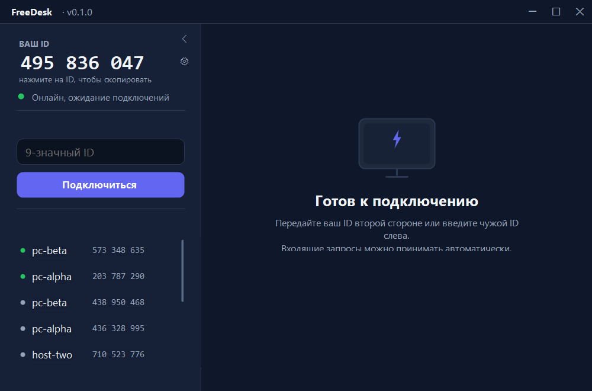

Удалённый доступ к компьютеру без облака
FreeDesk — аналог AnyDesk на своём сигналинге. Сервер только знакомит устройства и пропускает SDP/ICE: экран, ввод, буфер обмена и файлы идут напрямую между машинами через WebRTC. Никакой регистрации — только 9-значный ID.

Возможности
Всё, что уже работает end-to-end: агент на Windows отдаёт экран и принимает ввод, зритель подключается по ID.
H.264 (OpenH264) по умолчанию, MJPEG как резерв. Кодек выбирает зритель и передаёт его в offer'е — хост поднимает нужный трек.
Мышь и клавиатура идут по data channel теми же JSON-сообщениями, координаты нормализованы — работает при любом размере окна.
Текст синхронизируется в обе стороны автоматически, эхо собственных изменений подавляется.
Зритель видит список мониторов хоста и переключается кнопками «Монитор 1/2/…» — без переподключения, с ключевым кадром.
До 2 ГБ по тому же каналу: «Отправить файл…» и «Скачать файл…» с выбором пути на удалённой машине. Приём — в Downloads\FreeDesk.
Unattended-доступ по challenge-response: пароль не уходит ни на сервер, ни зрителю — в сигналах только nonce и proof.
Закрытие окна прячет агент в трей, он остаётся на связи. Автозапуск — в HKCU\…\Run, без прав администратора.
Зритель раз в 5 с присылает фактические fps и кбит/с; хост меняет TargetBitrate (×0,75 / ×1,2, не ниже 400 кбит/с).
DXGI Desktop Duplication, при сбое — GDI BitBlt. В RDP-сессиях DXGI отдаёт пустые кадры, детектор замечает это и уходит на GDI.
Как это работает
Три шага и один посредник, который не видит ни пикселя.
Запустить и получить ID
Скачайте exe и откройте — приложение зарегистрируется на сервере и покажет 9-значный ID. Регистрация не нужна.
Передать ID второй стороне
ID виден в окне, копируется кликом. Пароль устройства можно не задавать — тогда подключение подтверждает человек.
Подключиться
Введите чужой ID, при необходимости пароль — и работайте. Связь установится напрямую, сервер останется в стороне.
- Сервер хранит только метаданные сессий и передаёт SDP/ICE.
- Медиа и файлы не проходят через хостинг — это прямой канал.
- Если NAT симметричный, нужен TURN: сейчас только STUN, TURN — в планах.
Кодеки и скорость
Замеры на 2560×1440, кадр 1600×900. H.264 — режим по умолчанию, MJPEG остаётся резервом.
| Кодек | fps | На кадр | Трафик (активный экран) | В покое |
|---|---|---|---|---|
| H.264 по умолчанию | ~12 | ~21 мс | 3–5 КБ · 0,3–0,5 Мбит/с | 0,1 Мбит/с |
| MJPEG резерв | 15 | — | ~60 КБ · ~7,5 Мбит/с | ~0 |
Видео идёт штатным RTP. SCTP в SIPSorcery упирается в ~300 КБ/с из-за MAX_BURST = 4 пакета на SACK — для экрана этого мало. По data channel едут только управление и файлы.
- Ключевой кадр — раз в 5 с и по запросу зрителя {"t":"kf"}.
- Annex B access unit'ы, штатная FU-A пакетизация.
DXGI Desktop Duplication на консольной сессии даёт ~47 fps на захват+кодирование против ~19 у GDI. DXGI дублирует вывод адаптера, поэтому остальные мониторы снимаются GDI по координатам.
- --capture auto|dxgi|gdi — принудительный выбор режима.
- Курсор рисуется в кадре: видно, что делает удалённая сторона.
Безопасность
Минимум, который уже есть в коде, — без обещаний «военного шифрования».
Весь сигналинг — только по HTTPS (Let's Encrypt на хостинге).
256 бит, в базе хранится только sha256. Клиент видит токен один раз.
Регистрация — 20/час на IP, запросы — 120/мин на IP.
Читать и писать сигналы могут только участники. Заявки живут 15 минут, сигналы — 10.
Раньше был флаг автоприёма — он убран: угаданный ID не должен давать полный доступ. Без пароля заявку всегда подтверждает человек.
- Пароль хранится хешем: PBKDF2-SHA256, 120 000 итераций, соль 16 байт.
- Проверка до WebRTC: challenge → auth → accept, 3 попытки, окно 60 с.
- В сигналах — только одноразовый nonce и proof, сам пароль по сети не идёт.
Проект рассчитан на shared-хостинг и небольшую нагрузку. Это честный MVP, а не корпоративный продукт:
- Нет журнала подключений (кто, когда, с какого IP) — в планах.
- Нет аккаунтов и адресной книги — устройства знают друг друга по ID.
- Смена пароля — только на самой машине.
API сигналинга
Все ответы — {"ok":true,…} либо {"ok":false,"error":"code"}. Авторизация — Authorization: Bearer <device_token>.
| Метод | Путь | Назначение |
|---|---|---|
| GET | /api/v1/health | живость сервиса и БД |
| POST | /api/v1/device/register | регистрация → ID и токен |
| POST | /api/v1/presence | heartbeat раз в 15 с |
| GET | /api/v1/resolve/{id} | онлайн ли устройство |
| POST | /api/v1/session/request | заявка на подключение |
| GET | /api/v1/session/incoming | входящие заявки |
| POST | /api/v1/session/answer | accept / reject / end |
| POST | /api/v1/session/signal | offer / answer / ice |
| GET | /api/v1/session/poll | сообщения после курсора |
- long-poll (wait до 20 с) по умолчанию выключен — чтобы не занимать воркеры Apache.
- Отладочная страница: test.html — два окна и два устройства.
Скачать и установить
Windows 10/11 x64 · один файл · портативно, без установщика и без .NET.
Двойной клик — открывается окно с вашим ID. Рядом ничего не нужно: кодек H.264 встроен в exe и распаковывается при старте.
- Консольная версия для скриптов — freedesk-agent.exe.
- Автозапуск: --install-autostart, трей: --tray.
- Профили: --profile work — несколько агентов на одной машине.
- Создать базу и импортировать migrations/001_init.sql.
- Залить server/public/* в public_html, остальное — уровнем выше.
- config.example.php → config.php: dsn, пользователь, пароль.
- Проверить /api/v1/health и прогнать server/tests/smoke.ps1.
Ограничения и планы
Что упирается в shared-хостинг и что будет дальше.
- Нет WebSocket и демонов — сигналинг на коротких HTTPS-запросах.
- Нет TURN/UDP: симметричный NAT не пройдёт, нужен relay.
- MySQL 5.7 (EOL) — в базе только сигнальные метаданные и хеши токенов.
- Скорость файлов ~120–150 КБ/с — ограничение SCTP, а не канала.
- Аппаратное кодирование NVENC/QSV — OpenH264 тратит ~20 мс на кадр.
- Битрейт по RTCP-отчётам вместо фиксированных 3000 кбит/с.
- Аккаунты и адресная книга.
- Журнал подключений и смена пароля владельцем машины.
- TURN-пул на VPS, установщик и подпись бинарника.
Один файл, 9-значный ID и подключение напрямую — без регистрации, аккаунтов и облака.